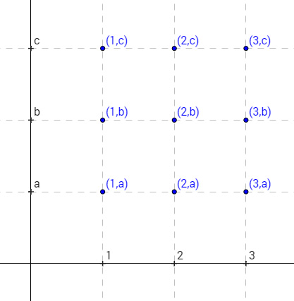

Prodotto cartesiano
Dati due insiemi $A$ e $B$ si chiama prodotto cartesiano di $A$ per $B$ un nuovo insieme i cui elementi sono tutte le possibili coppie ordinate che hanno al primo posto un elemento di $A$ e al secondo posto un elemento di $B$. Tale insieme si indica con $A \times B$.
In simboli: $$ A\times B= \{(a,b): a\in A, b \in B\} $$
Esempi:
- se $A=\{1,2,3\}$ e $B=\{a,b,c\}$ allora $A \times B = \{(1,a),(1,b),(1,c),(2,a),(2,b),(2,c),(3,a),(3,b),(3,c)\}$ e si può costruire e rappresentare graficamente in questo modo:
- se $A=B=\mathbb R$ allora $A\times B$ è il piano cartesiano: l'insieme di tutti i punti del piano rappresentati dalle coppie delle loro coordinate

Nota che per insiemi finiti il numero di elementi del prodotto cartesiano è precisamente il prodotto dei numeri degli elementi degli insiemi di partenza.
Relazioni binarie
Una relazione tra due oggetti $a$ e $b$ è un qualche tipo di rapporto che sussiste tra $a$ e $b$. Usiamo il termine “relazione binaria” per indicare il fatto che la relazione lega una coppia di soggetti (e non un numero più grande). Alcuni esempi familiari di relazioni binarie tra due persone possono essere quella di parentela o quella di amicizia. Consideriamo un insieme di persone (ad esempio gli studenti di una classe o di una scuola), e formiamo l'insieme di tutte le coppie possibili di persone prese da questo insieme (ad esempio (Mario, Carla), (Mario, Luigi), (Luigi Carla), (Mario, Mario) ...). Alcune di queste coppie saranno coppie di amici e quindi soddisfano la relazione di amicizia "x è amico di y", altre no. Nel complesso la relazione individuerà un sottoinsieme dell’insieme di tutte le coppie (il sottoinsieme delle coppie legate da amicizia). In matematica l’insieme di queste coppie viene identificato con la relazione stessa, cioè si definisce la relazione come l’insieme di coppie che essa produce. Questa scelta di identificare la relazione con l'insieme non è in effetti ragionevole se parliamo di insiemi e relazioni che hanno a che fare con la nostra esperienza concreta (riesci a vedere il perchè?) ma è una buona scelta se parliamo di relazioni ed enti matematici. Dunque chiameremo relazione binaria tra gli insiemi $A$ e $B$ un qualunque sottoinsieme del prodotto cartesiano $A \times B$ cioè un qualunque insieme di coppie $(a,b)$ (indipendentemente dal fatto di saper individuare o no un principio generale che accomuni tali coppie).
Esempi:
- Sono relazioni binarie sia l’insieme vuoto (che non contiene nessuna coppia) che l’intero prodotto cartesiano (cioè l’insieme di tutte le possibili coppie)
- La relazione di uguaglianza $y=x$ è individuata dall’insieme delle coppie che la soddisfano ($(1,1), (2,2), ...$) che sul piano cartesiano individua la bisettrice degli assi che attraversa primo e terzo quadrante
- La relazione di “diversità” $y\neq x$ è individuata dall'insieme delle coppie che la soddisfano cioè tutto il piano cartesiano con l'ecczione della bisettrice di primo e terzo quadrante
- l’equazione di una retta $y=mx+q$ definisce un insieme di coppie (coordinate cartesiane) e quindi è una relazione: la relazione che a parole si esprime “$x$ e $y$ sono coordinate di un punto della retta”
- l’equazione $x^2+y^2 < 1$ definisce un insieme di coppie e quindi è una relazione: la relazione che a parole si esprime “$x$ e $y$ sono coordinate di un punto interno alla circonferenza goniometrica”
Funzioni
Consideriamo la relazione tra l’altezza (in metri) di una persona e la sua età (in anni). Ci aspettiamo che l'altezza abbia una qualche forma di “dipendenza” dall’età, nel senso che se consideriamo una qualsiasi età ad essa si può associare un’unica altezza (l’altezza che la persona aveva a quell'età). Scriviamo $h(x)$ per indicare quell'unico valore che individua l’altezza all'età $x$: diremo ad esempio che $h(0)=0.5$ e $h(18)=1.7$. Non si può dire invece che ad ogni altezza si possa univocamente associare un'età: l'altezza può rimanere stabile per molti anni, l'altezza $y=1.7$ può corrispondere sia all'età $x=18$ che all'età $x=19$. Possiamo dire che l'altezza "varia in funzione" dell'età. Non possiamo invece dire che l'età "varia in funzione" dell'altezza (perchè appunto non possiamo associare ad una altezza un'unica età).
In generale chiamiamo funzione una relazione - cioè un'insieme di coppie ordinate $(x,y)$ - in cui il secondo termine $y$ delle coppie "varia in funzione" del primo termine $x$. In altri termini al variare del primo ($x$) si può sempre univocamente identificare il secondo (c’è una e una sola possibile scelta per la $y$ una volta dato il valore di $x$). Quando una relazione $f$ è una funzione indichiamo con la scrittura $f(x)$ quell'unico $y$ che è in relazione con $x$. Scriveremo $$ f: A \to B $$ per indicare il fatto che la funzione associa ad $x \in A$ un unico valore $y \in B$. Chiameremo il primo insieme $A$ dominio della funzione e il secondo insieme $B$ insieme di arrivo.
Esempi:
- Il seguente diagramma rappresenta una funzione dall' insieme $X$ all'insieme $Y$:
- La relazione “uguaglianza” citata prima che vale tra $x$ e $y$ quando $y=x$ è una funzione, ad ogni $x$ associa univocamente $f(x)=x$. Prende il nome di funzione identità, si indica anche con $\text{Id}(x)$
- La relazione “diverso da” $y\neq x$ sopra citata non è una funzione: per ogni elemento $x$ non si può individuare un unico elemento che è in relazione di diversità con $x$, ce le sono infiniti
- l'equazione di una retta $y=mx+q$ (forma esplicita) definisce una funzione: ad ogni $x$ associa univocamente $f(x)=mx+q$
- l'equazione $x^2+y^2=1$ definisce una relazione (vedi sopra) ma questa non è una funzione: dato un valore $x \in (-1,1)$ ci sono due valori per $y$ che soddisfano la relazione (ad esempio se $x$=0 abbiamo $y=1$ e $y=-1$), dato un valore di $x>1$ invece non esiste nessun valore di $y$ che soddisfi la relazione.
- La relazione $y=\sqrt{1-x^2}$ definisce una funzione solo se consideriamo come dominio $A=[-1,1]$, non è invece una funzione se consideriamo come dominio $A=\mathbb R$ (perchè?)


Funzioni iniettive, suriettive, biiettive
Abbiamo detto che una funzione associa (per definizione) ogni $x$ nel dominio a un unico $y$ nell'insieme di arrivo. E’ dunque garantito che ogni $x$ del dominio corrisponde ad un qualche $y$. Ci chiediamo: vale anche l'inverso? E’ vero anche che ad ogni $y$ dell'insieme di arrivo corrisponde un unico valore per $x$? Se fosse così allora anche invertendo i ruoli di $x$ e $y$ avremmo comunque una funzione. Questo in effetti può accadere come può non accadere, vediamo degli esempi:
- La relazione $y=x^3$ definisce una funzione con dominio tutto l’insieme dei reali: ad ogni $x \in \mathbb R$ corrisponde un unico $y$ (dato dal cubo di $x$). D'altra parte è anche vero che ad ogni $y$ corrisponde un unico valore per $x$ dato da $\sqrt[3]{y}$ che esiste sempre perché l'indice della radice è dispari. Quindi la relazione inversa è ancora una funzione: la funzione $x=\sqrt[3]{y}$.
-
La relazione $y=x^2$ definisce una funzione con dominio tutto l’insieme dei reali: ad ogni $x \in \mathbb R$ corrisponde un unico $y$ (dato dal quadrato di $x$). D'altra parte non è vero che ad ogni $y$ corrisponde un unico valore per $x$ per due motivi:
- agli $y$ negativi non corrisponde nessuna $x$ (nessuna $x$ elevata al quadrato può dare un valore negativo)
- agli $y$ positivi e diversi da $0$ corrispondono due valori di $x$, cioè $x=\pm \sqrt{y}$
Notiamo che ci sono due condizioni che sono verificate nel primo esempio e non lo sono nel secondo:
- ogni valore $y$ nell’insieme di arrivo corrisponde ad almeno un valore di $x$ del dominio ($f(x)=y$ per almeno un $x$)
- ogni valore $y$ nell’insieme di arrivo non corrisponde mai a più di un valore di $x$
Quando vale la prima condizione diremo che la funzione è suriettiva, quando vale la seconda diremo che è iniettiva. Se valgono entrambe abbiamo che anche la relazione inversa è una funzione e la funzione si dice biiettiva o invertibile.
Composizione di funzioni
Una volta definite due funzioni $f:A \to B$ e $g: B \to C$ è possibile defirne una nuova facendo agire in sequenza prima $g$ e poi $f$ sul valore apena ottenuto tramite $g$. Ad esempio se $f(x)=2x$ e $g(x)=x+1$ possiamo costruire una nuova funzione $f(g(x))$ che esegue prima $g(x)=x+1$ e poi sul risultato ottenuto applica $f(x)=2x$ raddoppiandolo. Partendo da $x=1$ avremmo al primo passo $g(x)=1+1=2$ e al secondo passo $f(g(x))=f(2)=2\cdot 2=4$. La funzione $f(g(x))$ avrà anch'essa una formula algebrica che la riassume, per trovarla possiamo procedere applicando in sequenza le definizioni di $f$ e $g$ in questo modo: $$ f(g(x))=f(x+1)=2(x+1) $$
Notare che è importante l'ordine con cui facciamo agire $f$ e $g$: se ne invertiamo l'ordine realizzando $g(f(x))$ otteniamo una funzione completamente diverso. Con gli esempi di prima abbiamo: $$ g(f(x))=g(2x)=(2x)+1 $$ potremmo dire che la composizione di funzioni quindi è un'operazione (tra funzioni) che non gode della proprietà commutativa.
Lafunzione ottenuta con la composizione $y=f(g(x))$ si indica anche con la notazione $y=f \circ g \ (x)$.
Funzione inversa
Ci sono delle coppie di funzioni che annullano l'effetto l'una dell'altra. Un esempio è dato dalla coppia di funzioni $f(x)=2x$ e $g(x)=\frac x 2$: applicando $f$ si raddoppia un numero, applicando $g$ si dimezza, quindi l'applicazione in sequenza di $f$ e $g$ (in qualunque ordine) riporta al valore iniziale. Brevemente possiamo scrivere che $f(g(x))=x$ e $g(f(x))=x$, per ogni $x$.
In generale se valgono le condizioni $f(g(x))=x$ e $g(f(x))=x$ per ogni $x$ diremo che $g$ è l'inversa di $f$ e viceversa. L'inversa di $f$ si indica talvolta con $f^{-1}(x)$.
Non tutte le funzioni hanno l'inversa. Le funzioni invertibili sono tutte e sole quelle biiettive (quindi iniettive e anche suriettive). Abbiamo visto due esempi nel paragrafo sulle funzioni biiettive: $f(x)=x^3$ è invertibile (l'inversa è $f^{-1}(x)=\sqrt[3]{x})$ mentre $y=x^2$ non è invertibile.